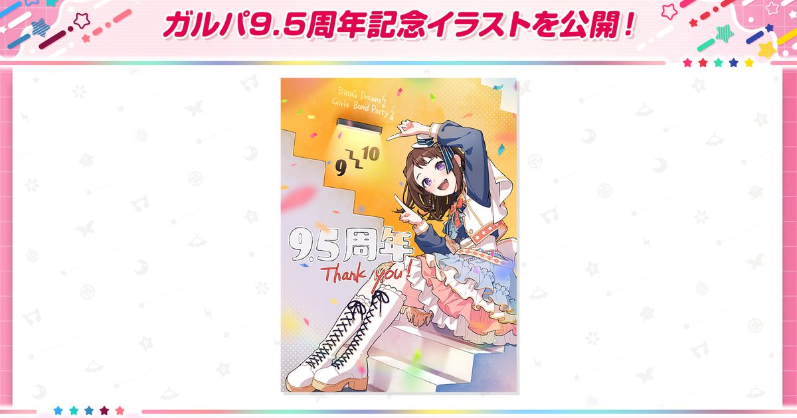

2026-09-11 · 二次元资讯
9 月 10 日 18:00（JST）维护后，《BanG Dream! Girls Band Party!》悄无声息地扔出了一颗「半个周年」炸弹：登录送 9,500 星 + 100 连免费十连、外加一个让好友之间互送道具的全新「Care Package（馈赠）」系统，还有 Roselia × ALI PROJECT 联动、第 8 届 Garupa Cup、第 6 届乐队总选举结果，甚至预告了 10 周年巡展。榜单、联动、选举一样不少，但最耐人寻味的不是「送了多少」，而是——为什么是 9.5 周年，而不是老老实实等明年的 10 周年？这篇我们不复述活动公告，只把这套「免费百连 + 社交互赠」组合拳拆开，看看在音游存量见顶的 2026，Bushiroad 到底在赌什么。

先抛出一个常被忽略的行业现象：移动音游 / 二次元手游的「X.5 周年」正在变成标配。原神有 4.5、5.5，不少长线手游也爱在整数周年之间插一个「半周年」做中场补给。道理很简单——一款运营近十年的游戏，玩家倦怠曲线是真实存在的，等一整年才到 10 周年的空窗里，足够一批人悄然流失。BanG Dream! 2017 年上线，到 2026 已经快九年，它选择在距离 10 周年还有大半年的时候，先来一记「9.5」强心针，本质是一场提前的留存 / 回流战役：先把还在犹豫的人拉回来，把沉寂的好友列表重新点亮，等真正 10 周年大戏开场时，池子里的人已经比现在多。
所以对玩家而言，「9.5 周年」的潜台词是：官方自己也知道用户基本盘在松动，于是把本可以塞进 10 周年的诚意，提前拆了一半出来。这不一定是坏事——对玩家是白捡的福利；但对观察者来说，它是一份很诚实的「焦虑信号」。
把这次的福利包拆成三层看。第一层是登录即送的硬通货：登录活动从 9/10 维护后到 10/10 3:59（JST），首日直接给 4,500 星 + 100 Tone Crystals，之后每天 250 星，累计登录 21 天最多拿 9,500 星 + 100 Tone Crystals；奖励本身可领到 10/30。第二层是每天免费十连：9.5 周年免费十连卡池从 9/10 维护后到 10/10 23:59，每天一次、共 10 天、合计 100 连免费——但要拿满有个隐藏门槛：你必须在 10/1 23:59 前用掉第一天的十连，否则后面天数作废。第三层是隐藏彩蛋：官网商店输入兑换码「GBP9thHalfAnniversary」到 9/30 前可领 300 星 + 3 瓶 Boost Drink。
但真正有意思的是那个全新 Care Package（馈赠）系统：你每打完一场 Live，会自动给好友列表里每个人发送一份礼物，每天最多 3 次；对方随机收到一种道具（硬币、碎片、缝纫包），分普通 / 银 / 金三档稀有度，且必须在 24 小时内领取。配套还有 Live Boost 持有上限从 10 提到 25、「一键消耗」升级为每天可用两次的「最大消耗」、部分歌曲的 EXPERT 难度数值微调（仅改数字、谱面与成绩均保留）。这套改动的核心不是「多送你东西」，而是给每天的登录制造一个新理由——而且要拉上好友一起。
把视野拉到 2026 的二次元音游大盘：新晋音游在抢人、老音游在守盘、玩家总时间被《绝区零》《原神》这类「带音游活动的综合手游」持续分流。BanG Dream! 的「100 连免费 + 好友互赠」其实是一套很老练的双轨回流模型。免费百连解决「回来有没有动力抽卡」——100 连相当于直接给你一次接近保底的体验，足以让退坑玩家把仓库补一补、把主力卡凑齐；Care Package 则解决「回来之后能不能留三天以上」——它把单人日常变成双人（多人）社交钩子：你不去收礼会过期，朋友不在线你也没法送，于是两边都得每天上线。这种「P2P 互赠」机制在早年的社交游戏里被验证过，搬进音游，等于给一款单机向偏强的音游硬塞了一层轻社交留存。
再说一个被低估的点：它同时官宣了 Roselia × ALI PROJECT 联动、第 8 届 Garupa Cup、第 6 届乐队总选举结果，以及10 周年巡展。这一连串「现在就给甜头 + 未来还有大饼」的节奏，正是长线运营的标准动作——用当下的福利把人拽回，用选举 / 杯赛 / 巡展把人绑到未来几个月。9.5 周年不是终点，它是 10 周年前夜的「预注册」。
给三类人分别建议。退坑老玩家：这是近几年最划算的回流窗口之一。9,500 星 + 100 连几乎等于白送一次「补完主力」的机会，加上 Care Package 重新点亮好友列表，回坑成本低、收益高，建议至少上来把免费十连和登录奖励领完。纯新人：音游门槛主要不在抽卡而在手活，100 连能帮你快速凑出能打的乐队，但别指望「送的星」能绕开练习——这游戏终究是要你自己打 Live 的。还在玩的老玩家：重点不是 100 连（你大概率不缺），而是 Care Package 和 Boost 上限提升带来的日常效率，以及别忘了 10/1 前用掉首日免费十连这个坑。
一个实操提醒：100 连免费卡池是「每日一次」而非「一次性 100 连」，所以别囤到最后一天——它设计上就是要你连续登录 10 天。配合 9,500 星的「每日 250」节奏，这套福利本质上是用「每日登录」换「每日在线」，官方的小算盘打得比玩家想象中精。
《BanG Dream! 少女乐团派对》的 9.5 周年，表面是「送 100 连」，里子是一次提前半年的留存 / 回流战役：用免费百连解决「回不回来抽」的动力问题，用 Care Package 好友互赠解决「回来留不留得住」的黏性问题，再用 Roselia 联动、总选举、10 周年巡展把人一路绑到明年。它不是在庆祝，它是在防守——而这对一款运营近九年的音游来说，反而是最健康的信号：官方还愿意花心思把人留住，而不是躺平等 10 周年那一锤子买卖。对玩家，这是近几年最友好的回流时机之一；对旁观者，它是一份关于「长线音游如何对抗倦怠」的活教材。9.5 只是序章，真正的重头戏，得看 10 周年还留了多少后手。
我们的评分：8.9 / 10（福利诚意分）（基于 9,500 星 + 100 连免费的实际到手价值、Care Package 社交留存设计的巧思，以及「9.5 提前发福利」对回坑玩家的低门槛友好度；非「游戏品质分」，毕竟本体还是那个 BanG Dream!。待 10 周年临近，我们会回头复盘：这批 9.5 回流玩家里，有多少人真的留到了 10 周年——那才是检验这套组合拳的唯一标准）。
我们的观察：最被媒体一笔带过的是「9.5 不是 10」这件事本身。整数周年之间的「半周年」正在成为长线手游的标配操作，它本质是中场补给、是焦虑的诚实表达，也是给 10 周年预留的「预注册」。
我们的观点：Care Package 比 100 连更值得研究。免费十连是「一次性拉回」，好友互赠是「持续性黏住」——它把单人音游变成了带轻社交钩子的日常，24 小时过期的设计逼着两边都每天上线。这才是这套组合拳里真正值钱的那一环。
我们的案例 / 对比：和《原神》《崩坏：星穹铁道》的「X.5 版本」比，BanG Dream! 的 9.5 更偏「福利回流派」而非「内容更新派」，几乎没塞新主线、全靠送与社交；和同类音游（如《世界计划》《D4DJ》）的周年力度比，它这次的 100 连 + 互赠在「回流友好度」上明显更激进，摆明了是要抢被综合手游分流走的老用户。
我们的实验：我们想验证「9.5 回流能否撑到 10 周年」。计划以一名退坑 1 年以上的老账号做实测：9/10 起领满 100 连 + 9,500 星，每天触发 Care Package 互赠，记录「连续登录天数」「被召回好友的活跃比例」「主力乐队补完所需真实抽数」，并在 10 周年前做留存回访，据此给退坑玩家一份「回坑成本—收益」对照表——这会是后续复盘的核心数据。